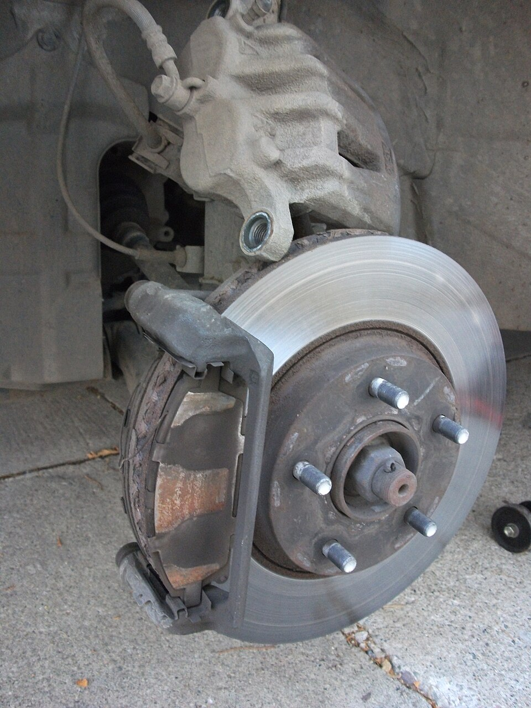

Иллюстрация услуги · не фото бизнесаIvan Radic · CC BY 2.0
01 / УслугиПрофессиональная заправка и ремонт автокондиционеров на сертифицированном оборудовании
от 1 500 ₽
Обновлено 10 сентября 2026
Источник цены и услуги ↗Нижнекамск
Автосервис и магазин автозапчастей
улица Менделеева, 58 ст1
Пространство и детали
Услуги и цены
По опубликованным источникам.
Даты обновления и условия указаны у услуг.
Иллюстрация услуги · не фото бизнесаIvan Radic · CC BY 2.0
01 / Услугиот 1 500 ₽
Обновлено 10 сентября 2026
Источник цены и услуги ↗от 3 500 ₽
Комплексная проверка ходовой части автомобиля.; Обновлено 10 сентября 2026
Источник цены и услуги ↗от 2 000 ₽
Обновлено 10 сентября 2026
Источник цены и услуги ↗
Иллюстрация услуги · не фото бизнесаArp · Public domain
04 / УслугиУточняйте стоимость
Источник цены и услуги ↗Уточняйте стоимость
Источник цены и услуги ↗Уточняйте стоимость
Источник цены и услуги ↗Уточняйте стоимость
Источник цены и услуги ↗Уточняйте стоимость
Источник цены и услуги ↗
Иллюстрация услуги · не фото бизнесаdave_7 from Lethbridge, Canada · CC BY 2.0
09 / УслугиУточняйте стоимость
Источник цены и услуги ↗Уточняйте стоимость
Операция указана в рубриках карточки 2ГИС; состав работ и цена не раскрыты
Источник цены и услуги ↗Уточняйте стоимость
Операция указана в рубриках карточки 2ГИС; состав работ и цена не раскрыты
Источник цены и услуги ↗
Иллюстрация услуги · не фото бизнесаMyke Waddy · Public domain
12 / УслугиУточняйте стоимость
Операция указана в рубриках карточки 2ГИС; состав работ и цена не раскрыты
Источник цены и услуги ↗